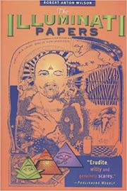
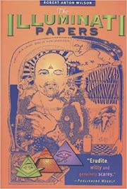

WHO?
Robert Anton Wilson (January 18, 1932 – January 11, 2007) wrote 35 books and over 1,500 published articles. His writings include Schroedinger's Cat Trilogy, called "the most scientific of all science fiction novels," by New Scientist, and nonfiction works of Futurist psychology and guerilla ontology, such as The Cosmic Trigger Trilogy, Prometheus Rising, Quantum Psychology and The New Inquisition. In 2006, as the unofficial write-in candidate for the Guns and Dope Party, Bob ran in the election for Governor of California.
Maybe Bob was a futurist, author, lecturer, stand-up comic, guerrilla ontologist, psychedelic magician, outer head of the Illuminati, quantum psychologist, Taoist sage, Discordian Pope, Struthian politician . . . maybe. Bob said Model Agnosticiam consists of never regarding any model or map of the universe with total 100% belief or total 100% denial. Bob's Maybe Logic inspired the creation of the Maybe Logic Academy. Once when asked if he saw himself as a philosopher, he replied, "I am more of a speculator."
In 2003, The Mayor of the city of Santa Cruz, California proclaimed July 23rdRobert Anton Wilson Day
MAYBE LOGIC
Belief is the death of intelligence.
Robert Anton Wilson (RAW), was a strong proponent for idealogical skepticism, or multi-model agnosticism, a philosophy erring on the side of caution when one is deciding what is and isn't absolute truth. He called this 'maybe logic'. At first glance, titles of his works might lead one to assume they were written by a paranoid schizophrenic or a fringe dwelling conspiracy theorist with a tendency to repeat himself. His books are full of repeating themes and plots that include the Illuminati, CIA, mind control, space travel, intelligent dolphins, and countless other classic conspiracy themes, but he also maintains a degree of irreverent humor and lighthearded wit that remind one not to take him, or anything too seriously. His ideas could arguably be used to liberate one's self from such uncomfortably rigid worldviews, and to consider a wider range of possibilties, while avoiding absolutes.
The idea is that we each create our own belief systems, (BS), which we construct, like a map, from the input of our experiences. We assign values in our mindmaps, some more variable than others, and through this process we gradually develop a belief system that allows us to navigate the world in which we live.
According to RAW, many of these variables are assigned subconsciously, without our awareness or choice, necessarily. When we experience something that effects us deeply for one reason or another, an 'imprint' takes place, we assign meaning to x and y, and the world we see from that point forward, for better or worse, isn't the same as it was before.
Since none of us live through the exact same set of imprint experiences from birth, adolescence, adulthood, and finally death, each of us is mapping a completely unique reality tunnel in order to make it from point a (birth), to point b (death).
Rather than being a reaction of these imprints, Bob Wilson suggested that perhaps we can optimize the way we experience life by making our belief systems more consciously determined, and less dependant on fear based imprinting.
This idea has many implications, but one of his suggestions is to take convictions with a giant grain of salt. Understanding that we may not 'know' everything we assume we know keeps us open to greater possibilities. If we can learn to be comfortable with not knowing anything for sure, naturally we tend to explore and remain curious.
Failing to understand the uniqueness of our reality tunnels creates a certain level of dissonance when we approach problems in a community. Assuming everybody sees and experiences the same reality that we do makes it difficult to understand why people behave differently than we would in certain situations.
"Maybe Logidc" allows us to confront the possiblity that our ideas are not more or less valid than the ideas of somebody who thinks differently than we do. Optimistic curiosity and empathy for other people is the result. Oh, and permission for a healthy sense of humor when things start to seem absurd.

 
